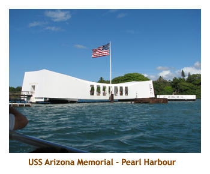
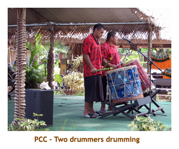
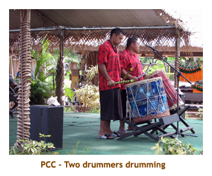
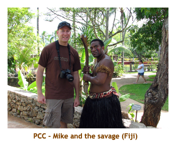
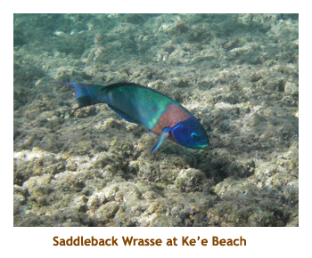
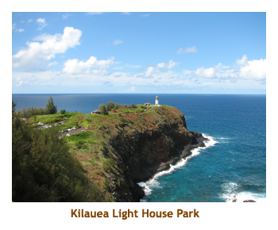
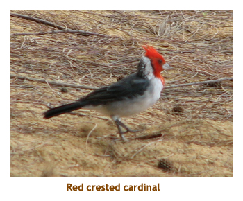

[ Home ] [ Travel ] [ Photography ] [ Pets ] [ Games] [ Rowing] [ Physics ]


Two Weeks on Oahu and Kaua'i
Calgary - Honolulu, Oahu - Princeville, Kaua'i - CalgaryTravel
Cruises
Past Cruises (Diaries)
Future Cruises
Rogues Galleries
Land Trips
Diaries (Land Trips)
Hawai'i - Big Island - 04'01
Hawai'i - Maui - 05'02
Hawai'i - Big Island - 04'03
Hawai'i - Kaua'i - 09'04
Hawai'i - Big Island - 04'06
Hawai'i - Maui - 04'06
Mainland China - 05'07
Phoenix, Arizona - 12'07
Greek Isles - 05'08
Hawai'i - Kaua'i - 09'08
Hawai'i - Big Island - 09'09
Hawai'i - Maui - 05'12
Hawai'i - Big Island - 04'13
Ireland - 08'13
Mexico - Cancun 11'13
France/Belgium/Lux 07'15
Hawai'i - Big Island - 05'17
England / Wales - 06'17
Hawai'i - Big Island - 09'19
Photography
Cameras
Underwater
Pets
Tara
Blackie
Whitey
Muffy
Ollie
Rusty
Fluffy
Rufus&Dufus
Games
Rowing
Physics
Day 1 (Sept 7) - Flight to Honolulu
Early in the year, Mike and I decided on another trip to Hawai'i. He had been to Kaua'i when he was a year old, so didn't remember it at all. Having been to Maui and the Big Island several times, we decided that it was time to take him to Kaua'i. Two weeks sounded like a good length of time as Mike was restricted on holiday time and I didn't want to leave Marjorie for too long. Mike expressed an interest in visiting the Pearl Harbour memorial (which I had never been to), so we refined the trip to 3 nights in Honolulu and 10 nights in Kaua'i.
Then, Chrissy and Matt decided to join us as well. They could only get arrange a week
long holiday so decided to join us for the final week in Kaua'i. I think that Matt had been
to Hawai'i before (Honolulu?), but this would be a first for Chrissy. I originally booked
flights for Mike and I as Calgary to Honolulu return, with connecting flights between
Honolulu and Lihue. I booked C&M as Calgary to Lihue return. Just for fun I checked
the pricing for each leg of the Calgary return trips and, lo and behold, the legs were not
equally priced. In fact, one way to Honolulu was less than half of the return price, and
one way Lihue to Calgary was less than half of the return trip. So, I booked Mike and I
one way both ways, saving a bunch of money, PLUS we only needed one way from
Honolulu to Lihue as well. It pays to check!
Our flight to Honolulu was through Seattle on Northwest. The flight left YYC at 6:30 AM, so
we had an early start to the day. However, it also meant that we arrived in Honolulu
just after 11 AM. Great! We grabbed our car and drove to Waikiki to our hotel. It
was the Wyland Outrigger. It was a wonderful hotel with lots of Wylands pictures and
sculptures around. We were about 5 blocks from the north end of Waikiki Beach so did
a walk around to orient ourselves. We stopped for lunch at a Japanese restaurant.
After lunch we took a long walk along the length of Waikiki Beach and then wandered
through Kapiolani Park. At the bandshell, a Hawai'ian band was playing some
wonderful music with a couple of singers and a hula dancer. We sat on the park bench
for a while listening to the music.
Then we made our way along Kapialani Boulevard, passing all the clothing and surfboard
shops. What is it with these "ABC" Stores? There's one in every block! Back at the hotel
we put on our swim trunks and headed to the hot tub. We met a couple of fellows there
from Sydney, Australia. When we had had enough of the tub, it was time for dinner. we wandered
down Lewer's Street toward the beach and came upon a pub called Moose
McGillicuddy's. We thought we would give it a try and it was excellent. Then we did some
more wandering around the area before returning to the hotel. We went to bed early - it had
been a long day and we had a 6:30 AM appointment for the next day.
Day 2, 3 (Sept 8, 9) - Two days in Honolulu

Before the trip, I had decided to pre-book a Memorial tour through Roberts of Hawai'i.
We had to be up, breakfasted and over to the bus stop (about two blocks from
our hotel) by 6:30 AM. It was a beautiful day. Our hotel iincluded a free "continental"
breakfast (drink and bun), so it didn't take us long to eat. The bus was full after
completing its pickup run. Our first stop was the facility for the Pearl Harbour memorial.
We had about 1/2 hour to browse through the Pearl Harbour Museum and then we
assembled for a 1/2 hour movie about the invasion. The movie was very good.
Then we boarded a boat that took us out to the USS Arizona Memorial. It is
constructed upon the remains of the sunken ship. We had 15 minutes in the memorial
and then were picked up and taken back ashore. Very moving!

 The remainder of our morning was a bus trip to the Punch Bowl Cemetery and
then through the historic areas of Honolulu. We stopped at the parliament buildings and
Iolani Palace for a walk-about. It was a beautiful blue sky day, so great for photos.
We returned to our hotel for lunch. We decided to eat at Moose McGillicuddy's again.
It was good for lunch too! After lunch we hopped in the car and did the southern
island circuit. We wound around the ocean side of Diamond Head, twisted through the
fabulous homes to the east, and then stopped at Hanauma bay for some photos.
Continuing on we stopped at the Sea Life Park, but it was too late in the afternoon to go in.
We traveled up the east cost to the Pali Highway and then cut back across the middle
of the island to Honolulu. That night we decided to eat at an Italian restaurant that was
attached to the hotel.
A great day.
The remainder of our morning was a bus trip to the Punch Bowl Cemetery and
then through the historic areas of Honolulu. We stopped at the parliament buildings and
Iolani Palace for a walk-about. It was a beautiful blue sky day, so great for photos.
We returned to our hotel for lunch. We decided to eat at Moose McGillicuddy's again.
It was good for lunch too! After lunch we hopped in the car and did the southern
island circuit. We wound around the ocean side of Diamond Head, twisted through the
fabulous homes to the east, and then stopped at Hanauma bay for some photos.
Continuing on we stopped at the Sea Life Park, but it was too late in the afternoon to go in.
We traveled up the east cost to the Pali Highway and then cut back across the middle
of the island to Honolulu. That night we decided to eat at an Italian restaurant that was
attached to the hotel.
A great day.
 
The next day we were booked for the Polynesian Cultural Center. We had
been to the PCC in 1980 and really enjoyed it. I had booked the buffet
lunch and the afternoon entrance pass. We had plenty of time to get to
the lunch, so took our time. we crossed the island on the Like Like Highway
and then headed up the east coast of Oahu. We stopped at Kahana Bay
Beach Park for a while as we were too early for our 11:45 lunch date at the PCC.
We heard on the news the next day that a surfer had been attacked by a shark
on that very same beach later in the day! We arrived at the PCC just as the
buffet was opening. It was very good - lots of shrimp!

The next day we were booked for the Polynesian Cultural Center. We had
been to the PCC in 1980 and really enjoyed it. I had booked the buffet
lunch and the afternoon entrance pass. We had plenty of time to get to
the lunch, so took our time. we crossed the island on the Like Like Highway
and then headed up the east coast of Oahu. We stopped at Kahana Bay
Beach Park for a while as we were too early for our 11:45 lunch date at the PCC.
We heard on the news the next day that a surfer had been attacked by a shark
on that very same beach later in the day! We arrived at the PCC just as the
buffet was opening. It was very good - lots of shrimp!

After lunch we entered the park and visited the seven villages. It was especially
interesting to me as Marj and I had a South Pacific cruise coming up (in 2 weeks)
and we would be visiting Samoa, Fiji, the Cook Islands,Tahiti and New Zealand.
The parade of floats was excellent featuring floats (on the canal) of all the villages.
A new attraction is the IMAX theatre where we saw "The Coral Reef". I had seen
it before in Seattle, but it was well worth seeing again. About 5 PM or so, we had
seen it all (and it was very hot!), so we hopped in the car and continued around the
north end of the island. We found a great shrimp shack (trailer?) Waialee and had
a wonderful shrimp dinner there. As we hit Haleiwa and headed south, it was starting
to get dark. we arrived back at our hotel about 8 PM and did a quick hot tub before bed.
Another wonderful day!
Day 4 (Sept 10) - Inter-island to Kaua'i
Our 3 nights in Honolulu were done. We got a great time for our inter-island flight to Kaua'i - 11:00 AM (landing at 11:40). No rush on either side! In the morning we did a final walk around of Wiakiki. We stopped at a Quicksilver shop and I bought a pair of swim trunks (on sale). Mike bought some stuff too. Then we loaded up our bags and headed to the airport. We remembered about filling up the car with gas just as we entered the airport grounds and had a heck of a time getting out again and finding a gas station. However, we got the car back in time and made our flight.
Landing in Lihue, we retrieved our luggage and picked up our rental car. It
was only about noon, so we headed up the highway toward Princeville. We
stopped at the Foodland in Kapa'a and picked up groceries for the week. we
arrived at our condo in time for a home made lunch.

After lunch, we continued on to the end of highway at Ke'e beach. It was time to snorkel!!
The beach wasn't too crowded, qlthough there is minimal parking there. The
snorkelling was very good. We spent the afternoon at the beach and also visited
one of the wet/dry tunnels. Then we headed back to the condo to figure out where to go
for dinner. We ended up going to CJ's Steak and Seafood at the Princeville Mall. It was close
to our condo and very good. That evening we didn't do much, but did have time
for a game of Carcassonne.
Day 5 - 7 (Sept 11 - 13) - Mike and I on Kaua'i
 Day 5 - Our pattern of activities for the weeks was essentially snorkel a new beach each morning and tour a new area each afternoon. Today we decided to do Queen Emma's Bath which was only a short distance from our condo. We drove several blocks to the parking lot and then hiked down the path to the lava. Walking across the lava we finally came to the swimming hole. There were a few people already there. It was interesting snorkelling in an enclosed pool as we normally snorkel in more open water. There were quite a number of fish there, although the varieites were limited.
We showered at the condo and then headed out to the Kilauea Lighthouse Park for
the afternoon. I've always enjoyed the crowds of water birds at the park. I had
forgotten that there was a charge to enter the park, so we decided not to go in as we
would be returning later with C&M. We browsed through the shopping mall at Kilauea
where I bought a couple of ceramic tiles. Then we had lunch at the Lighthouse Bistro.
I ordered the coconut shrimp, but 10 minutes or so later, I was informed that they were
out of it. rats! I forgot what I had, but it was good. Across the street from the mall was
another strip mall that had an ice cream shop. The ice cream was excellent! We filed
the location away for when C&M arrived. I think we played Carcassonne again
that afternoon. We had dinner at the condo, and spent the evening walking
around the grounds of a brand new hotel complex just down the street. I think
it was a Sheraton.
Day 6 - Today we decided to drive around to the bottom of the island to snorkel at my favourite turtle hangout (Ho'ai Bay) and then at Poipu Beach. The turtle area (near Spouting Horn) is entered from a small rocky beach beside the Kuhio Shores Hotel. It was tough getting in and out as the waves crashing in were fairly large. It was a challenge not to get bumped against the rocks. There was a narrow channel to get back to the beach so it was quite tricky. Last time I had seen maybe 10 or 12 turtles, this time we only saw two. But it was still worthwhile. We buzzed down to the end of Lawai road and walked over to the Spourting Horn. The surf was not very active today, so the horn spouted, but wasn't spectacular.
Then we nipped over to Poipu Beach and snorkelled the shoreline. Saw another
turtle! It started to rain while we were in the water and it rained on and off for the rest of
the afternoon. We had lunch at the Brennecke Broiler. It was great. They even had our
favourite Punalu'u taro buns from the Big Island. The buns came with the salad bar
and I think Mike ate a whole bag of them. We drove home in the pouring rain. By the time
we got back to Princeville, the weather had cleared up. We made our own dinner at home.
We played Carcassonne in the evening.
Day 7 - This morning we headed to the nearby "Tunnels Beach" for some snorkelling. It was the best snorkelling to date. There were lots of fish. Then we visited the wet cave across the road. We came home to shower and clean up. For lunch we buzzed down to the nearby town of Hanalei and ate at Kalypso. This is the same restaurant Marj and I tried in 2005, but then it was called Zella's. Very nice. Then we headed to Ke'e beach to walk part of the Kalalau Trail. We didn't get very far as the trail was steep, slippery and we only had sandals on.
We had dinner back at the condo and then headed into Lihue to pick up Chrissy and
Matt at the airport. They arrived at 7:30 PM, but their luggage didn't. Their Calgary to
Seattle connecting flight had been delayed, so the connect time in Seattle was too short
to allow their luggage to switch planes. We would have to come back the next evening
to get the luggage. Bummer! Did some quick shopping at the Safeway (in Kapa'a)
for toothpaste and toiletries for C&M and then headed to the condo for the night.
Day 8 - 10 (Sept 14 - 17) - Matt and Christina arrive
Day 8 - C&M didn't have any beach clothes, so we decided to make this our island tour
day. It was a beautiful clear sunny day. We headed off at 8 AM. We drove down
around the island to the town of Waimea and then headed up the canyon. It was a
gorgeous day and the lookouts were spectacular. By the time we had gotten to the
end of the road (at the Kalalau lookout), the clouds had started rolling in and the
final lookout was misty with cloud. We headed back down to Waimea and had
lunch at a shrimp shack. The coconut shrimp was yummy. Then we went to Jo-Jo's
for shave ice. On the way back we stopped at Spouting Horn which was spouting
nicely. Then we drove along Poipu Beach and past our old hotel from 1980 - the
Sunset Kahili. Then we headed back towards Lihue and stopped at the Humane
Society building for a look at the cats and dogs. They have a fabulous facility there.
It was cloudy and raining by this time. Then we headed in to Lihue and spent some
time at Costco. We had to kill a couple of hours waiting for the luggage to arrive
at the airport. Then we drove to two nearby water falls (Wailua Falls and
Opaekaa Falls). By then it was dinner time
so we went to Mariachi's for dinner (Mexican food). I had a shrimp salad which was
delicious. After a walk on the beach at Nawiliwili harbour, it was 7 PM and time to
visit the airport to pick up C&M's luggage. Then we headed back to Princeville
arriving at our condo about 8:30. It was a long day!
Day 9 - After breakfast we headed off to the nearby Anini Beach. It is a beautiful beach and a good "first Hawaiian beach" for C&M. Mike and I snorkelled, while C&M (not snorkellers) swam in the water.
Back at the condo we showered and cleaned up and then headed to Kilauea
to see the lighthouse. It was sunny and hot. On the way we stopped at the
Lighthouse Bistro (again) for lunch. We wandered around the mall and then continued
on to the lighthouse. The lighthouse is on a spit of land that is populated with
various seabirds - thousands of them! Very interesting. After leaving the lighthouse,
we stopped for ice cream in Kilauea. Back at the condo Matt started up the BBQ and
we had steaks and corn for dinner. After dinner we played some Puerto Rico.

Day 10 - While Mike was still sleeping, I took C&M to see Queen Emma's Bath where
Mike and I had snorkelled the previous week. Once again there were a few
people already there. Afterwards we picked up Mike and headed
west through Hanalei to Ke'e beach. Mike and I snorkelled (saw a turtle) and
C&M swam. On the way back to the condo, we stopped at the Mediterranean
Grill for lunch (just west of Hanalei).
Back at the condo we vegged for a while and then Mike and I
walked down to Wyllie's Beach. Back home again, I finally got around to trying
the complex swimming pool. It was really hot and humid out, so the swim was
very refreshing. We all went to the Princeville Mall for dinner and ate at the
Paradise Bar and Grill. Very nice. After dinner we all went in the pool and had
a great time. Then we played a game of Carcassonne.
Day 11 - After breakfast, we headed off past Lihue to the new railway excursion at an old restored plantation. The property is called the Kilohana Estate, dating back to 1935. The mansion is 16,000 square feet in size. The train ride was a 40 minute jaunt through rows of tropical trees and plants, with a stop to feed some pigs and goats. The estate was very interesting.
Afterwards, we drove to Poipu Beach for a snorkel / swim. The beach was beautiful with a sunny blue sky. We then drove to Lihue and had lunch at Kauai Pasta, followed by desert at Costco. We spent the afternoon at home swimming in the pool and reading. For dinner, Matt BBQ'ed some hamburgers. Then we played some Puerto Rico.
Day 12 - 14 (Sept 18 - 20) - Final days on Kaua'i
Day 12 - Matt was up early with me, so we drove over to the Hanalei Bay Resort and walked down to the beach. It was very nice early in the morning. After breakfast we all drove to Lumahai Beach, just past Hanalei Bay. This is the beach from the movie South Pacific. The we continued on to Ha'ena Beach Park (Tunnels Beach) for some swimming / snorkelling. The boys took boogie boards and rode the surf for a while. We had a close call with the car keys. They got dropped in the sand when we moved from one location on the beach to another (quite a distance away). Matt found where we had been sitting (thanks to some sand castles) and there were the keys! Whew!! Then we headed back to the condo and had burgers for lunch. We popped into the nearby Princeville shopping mall and had ice cream at Lapperts. It was more expensive and not as good as the ice cream at Kilauea. We stuck around after lunch and went swimming in the pool. The condo pool was quite large and just a beautiful temperature. I could have stayed in it all day! C&M headed out for a drive to Kapa'a, while Mike and I stayed at the condo. I returned to the pool by myself and met a fellow there who was on the board for the condo complex. For dinner we headed into Hanalei and ate at Kalypso (again). Then we played some Carcassonne.
Day 13 - Today was our penultimate day on Kaua'i. After breakfast we headed south to Kapa'a. Our first stop was the surfing beach called Ke'alia Beach, just north of Kapa'a. Mike and Matt brought their boogie boards and had fun in the waves while Chrissy and I just sat in the wonderful sun on the beach. When the boys tired of the surf, we continued on to Lydgate Beach. This is a great beach as there is a protected snorkelling area. Mike and I snorkelled around the enclosure while C&M joined the other swimmers. After we had warmed up in the sun, we drove a short distance into Kapa'a and had lunch at Pizetta.
We then drove back north to princeville to spend the afternoon at the condo. We walked over
to the pool and spent an hour or two swimming and lounging in the sun. This is the life! Mid-afternoon
we drove over to our favorite Kilauea ice cream shop. we had to wait a while as the owner was out
picking up his ice cream supplies. We had dinner at
the condo and played some Puerto Rico in the evening.
Day 14 - Oh no! Today is our final day! At least our flight isn't until the evening (10:20 PM, to be exact) so we can enjoy the day in Kaua'i. We decided to do our final beach visit to Ke'e beach. However, when we got there the beach patrol guys said that they were closing the beach because the currents and waves were too strong for swimmers. So, we headed back to Anini Beach which was protected by a huge reef parallel to the shore (about 500 yards out). The beach was quite close to the condo and the snorkelling and swimming were very good. After we had satisfied our beach craving, we drove to CJ's in the Princeville Mall. It was closed for lunch on Saturdays. Just our luck, first the beach is closed and then the restaurant. We drove into Hanalei and ate at the Polynesia Cafe - an outdoor fast food place. It was really good.
I guess our condo hadn't been rented out for the following week, as there was no one there to toss us out. So we enjoyed the pool for the last time and played some Carcassonne. We packed our stuff into the car and headed into Lihue. It was election day (new Mayor of Kaua'i) and polling stations were set up in parks and picnic areas. Everyone was out to vote and then have a BBQ party! We stopped first at the K-Mart mall in Lihue as I wanted to get some new sandals (my other ones were falling apart). We found a shoe store that had some good sandals at a very reasonable price. I think Chrissy bought some footwear too. Then we drove to the Lihue BBQ Inn. Marj and I had been there before and really enjoyed it. Once again it was very good. After dinner we walked along Nawiliwili Harbour. Then it was time for the airport.
Our flight was through the night and we landed in Seattle the next morning. From there it was a short flight to Calgary and we were home again. It was Sunday, so Marjorie was there to pick us up. Chrissy had left her car at the airport. Marj had been looking after Minnie for the week. What a wonderful trip. Too bad Marjorie couldn't have been there too ...